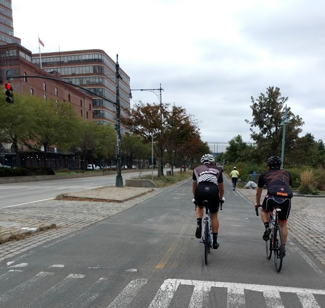
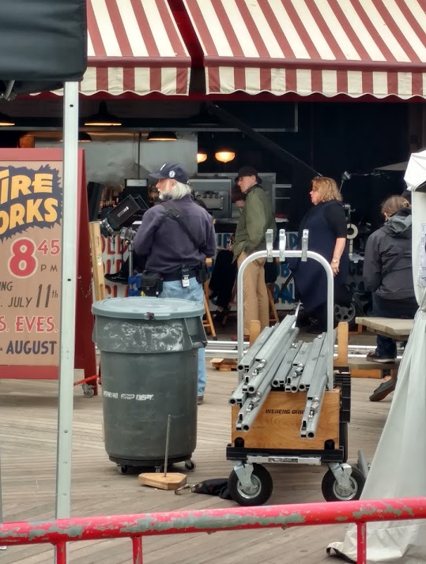
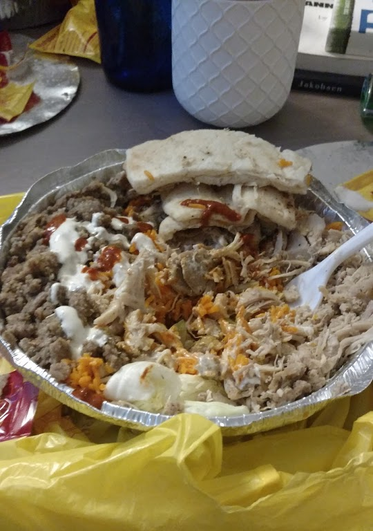
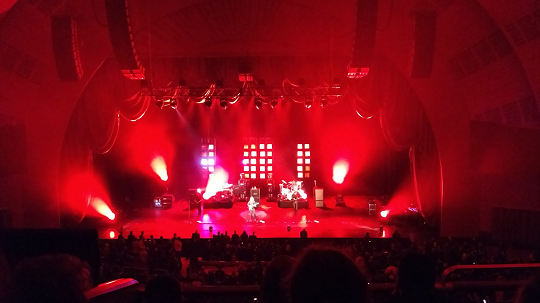
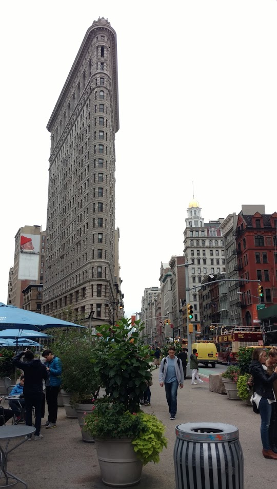
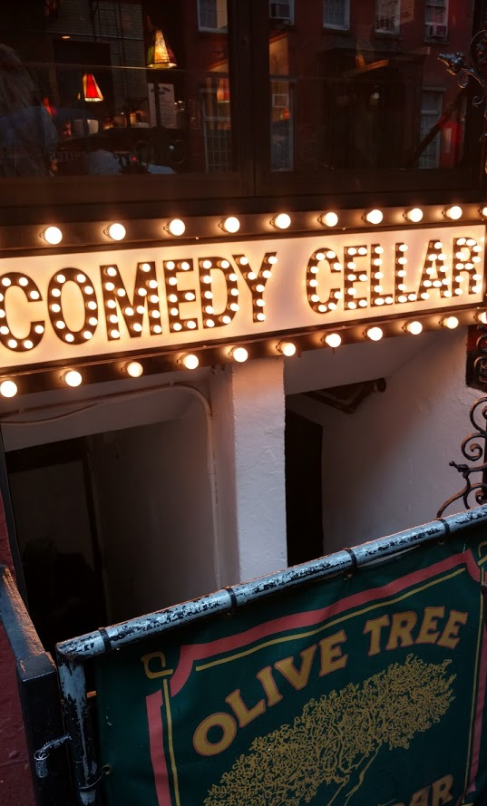
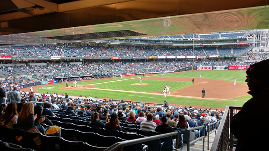

I like to ride my bicycle
We spent a lot of time riding bikes. A lot. A 60 mile ride one day and an 80 mile ride another. We toured Manhattan, crossed the Brooklyn Bridge, went to Coney Island and even went a little bit upstate! I passed on the third ride. ;)
Here's a wobbly video I took!
It's not that I'm afraid to die, I just don't want to be there when it happens
We stopped at Coney Island for some calories mid-ride. We noticed a small film crew setting up equipment. The bustle grew while we inhaled deep fried fish and a beer or two. As we were getting ready to leave, I asked a production assistant about the film was and he said it was an untitled Woody Allen project starring Justin Timberlake and Kate Winslett. Woody was a little bit behind him and I was able to grab a picture! Look closely...
You cannot not get Halal Guys
And of course, street halal food after the 80 mile ride.
Rice.
Chicken.
Lamb.
White sauce and a pinch of the red.
We knew about it before it was cool. ;)
Nightmares of the Sun
One of the main reasons for the trip - my favorite band Opeth at Radio City Music Hall. They played a ton of songs, including a few from their new album Sorceress and a bunch from two of their most acclaimed albums "Deliverance" and "Damnation." It was a fantastic show and Radio City is only a few blocks from my friend's apartment.
Here's their new single: Opeth - Sorceress
Exploring on my own
I was done riding so I spent the final day exploring. I went to a few museums, had some coffee, and bought some souvenirs. Here's the Flatiron Building:
Louie, Louie, Louie, Lou-aayyyy
I had to make a stop at the Comedy Cellar. So many of my favorite comedians have played here. I wasn't able to see a show though.
Good things happen in bars
I stepped into a bar for a quick beer and made friends with a guy that had an extra ticket for the last Yankees game of the season! That was a wild time and I was able to meet my friends again later that evening for sushi and a jazz club.
